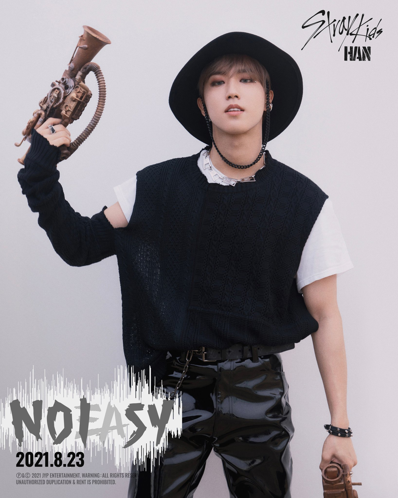

-
BangChan #003

- Leader
- Voice Line
Bang Chan (방찬) nasceu em outubro de 1997 como o filho mais velho de três filhos em Seul, Coréia do Sul. Durante sua infância, Chan mudou-se para Sydney, Austrália, e mudou de casa várias vezes. Ele teve aulas de dança, incluindo balé e dança moderna. Ele também gostava de praticar esportes e ganhou muitos prêmios de natação. Em dezembro de 2017, foi revelado que Bang Chan finalmente estrearia como líder do grupo masculino "Stray Kids". Em 25 de março de 2018, Bang Chan fez sua tão esperada estreia com o mini-álbum I am NOT como líder, vocalista principal, dançarino principal, compositor, letrista e rapper do Stray Kids.
-
Lee Know #025
- Main Dancer
- Sub Vocal
Lee minho (이민호), mais conhecido pelo seu nome artístico Lee Know, é um rapper, cantor e dançarino sul-coreano. Ele nasceu no dia 25 de outubro de 1998 em Gimpo, Coréia do Sul. Minho era um dançarino de backup, ele já trabalhou como um (dançarino de backup) na turnê do Bts no Japão. E foi trabalhando com isso que Minho percebeu que queria tornar-se um cantor, já que amava estar em cima do palco. Ele tornou-se popular por ter sido um dos nove finalistas do programa Stray kids, produzido pela JYP Entertainment e, debutou no grupo de mesmo nome (que o programa) Stray Kids, no dia 26 de março de 2018, com o MV District 9 do mini-álbum I am Not.
-
Changbin #004

- Main Rapper
- Sub Vocal
Seo Changbin (서창빈) é um rapper sul-coreano e integrante do boy group sul-coreano Stray Kids, da JYP Entertainment. Changbin nasceu no dia 11 de Agosto de 1999 em Yongin, Coréia do Sul. Seu desejo em se tornar um cantor surgiu depois de uma apresentação num festival escolar, a reação do público foi inesquecível para ele. Changbin se formou no Bora High School e também frequentou a academia de rap e dança “MU DOCTOR ACADEMY”. Após integrar no reality show "Stray Kids", Changbin fez o seu debut oficial no dia 26 de março de 2018 com o álbum "I Am Not", tendo como música título "District9".
-
Hyunjin #004

- Rapper
- Main Dancer
Hwang Hyun Jin (황현진; nascido em 20 de março de 2000), nasceu em Seul, na Coreia do Sul, é filho único, se formou na SOPA (Escola de Artes Cênicas de Seul) e em fevereiro de 2019, estudou Dança Prática. Quando era criança, morou um tempo em Las Vegas, entretanto, seu nome em inglês era Sam Hwang. Simplesmente conhecido como Hyunjin, é um cantor sul-coreano e membro do grupo K-pop Stray Kids formado por meio do programa de sobrevivência sob o mesmo nome da JYP Entertainment. Ele fez sua estreia com o Stray Kids em 25 de março de 2018.
-
Han #008
- Main Rapper
- Voice Line
Han Ji Sung (한지성) ou apenas Han (한), é um rapper sul-coreano e integrante do boy group sul-coreano Stray Kids, da JYP Entertainment. Han nasceu no dia 14 de Setembro de 2000 em Incheon, Coréia do Sul. Ele passou grande parte de sua infância e adolescência na Malásia, onde se formou na R.E.A.L International School. Em 2017, foi anunciado um novo programa de sobrevivência chamado Stray Kids, criado pela JYP Entertainment junto à Mnet. Han foi selecionado para o programa juntamente com outros 8 meninos, e todos teriam uma chance de debutar em um novo grupo. Han conseguiu chegar à final e foi anunciado como integrante oficial do novo boy group da JYP Entertainment, Stray Kids. E antes mesmo da formação do grupo, Han já fazia parte do grupo 3RACHA, que atualmente é uma sub-unit de rap do Stray Kids. Stray Kids teve seu debut oficial no dia 26 de Março de 2018, com o álbum “I am NOT” e a música título “District9”.
-
Felix #001
- Rap And Dance Line
Lee Felix (이필릭스), ou então reconhecido apenas por Felix (필릭스), é um artista rapper coreano que faz parte do grupo Stray Kids. Felix nasceu no dia 15 de Setembro de 2000 em Sydney, na Austrália. Lee é popularmente conhecido por ter participado do reality show "Stray Kids", esse que fora administrado pela JYP Entertainment junto da Mnet. Após isso, então, entrou no grupo sul-coreano Stray kids, também administrado pela empresa JYP Entertainment.
-
Seungmin #011

- Voice Line
Kim Seungmin (김승민), mais conhecido pelo seu nome artístico Seungmin (승민), é um artista coreano. Nasceu no dia 22 de Setembro de 2000. Popularmente é conhecido por ter participado do reality show "Stray Kids" administrado pela JYP Entertainment e Mnet e ser integrante do grupo masculino sul-coreano chamado Stray Kids gerenciado pela empresa JYP Entertainment.
-
I.N #023
- Voice Line
Yang Jeong In (양정인) popularmente conhecido pelo nome artístico I.N ou Jeongin (정인) é um cantor sul-coreano e membro do “ Stray Kids (스트레이 키즈) ” da JYP Entertainment. Jeongin teve o seu debut oficial no dia 26 de março de 2018 com o showcase oficial e o lançamento do álbum "I am NOT" e a música título “District 9” no dia 26.